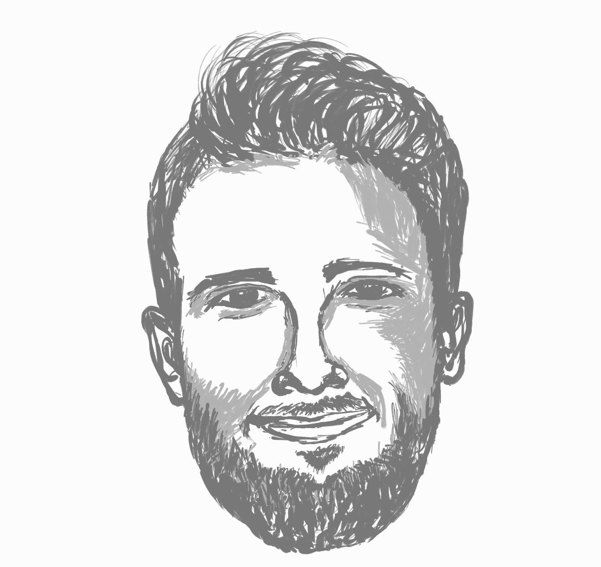

How Cemeteries and Solar Panels Explain Modern Energy Systems
Paolo Scarabaggio explains smart energy systems through multi-agent systems, energy communities, solar panels, and fairness.
Season 1 · Episode 6
How Cemeteries and Solar Panels Explain Modern Energy Systems
Join us for a lively chat in Vienna as we explore how toddlers, cemeteries, and solar panels all help explain the future of smart energy systems! From multi-agent chaos to human-powered pavements, discover how math, fairness, and creativity are lighting up tomorrow’s sustainable world.
Listen
Guest speaker

Paolo Scarabaggio
Paolo Scarabaggio received a PhD in Electrical and Information Engineering from Politecnico di Bari, Italy. He is currently an assistant professor (RTDA) at the Decision and Control Laboratory of Politecnico di Bari. In 2019, he visited the Delft Center for Systems and Control, Technical University of Delft, The Netherlands. His research interests include modeling, optimization, game theory, and control of complex multi-agent systems, with application in energy distribution systems, and social networks. He is author of 20+ printed international publications. He is the recipient of the 2022 IEEE CSS Italy Best Young Author Journal Paper Award.
Quick quiz
Check your understanding
Transcript
Open transcript
Speaker 1 (Sungyeon): Hello, everyone. We are now in Vienna to attend the IEEE International Conference on Systems, Man, and Cybernetics. And we managed to grab a very special guest, Dr. Paolo Scarabaggio, to talk about energy systems. Welcome, Paolo!
Speaker 2 (Paolo): Thank you, thank you.
Speaker 3 (Rebbecca): Could you please share with us a little bit about your academic journey as a starter?
Speaker 2: Okay, so my academic journey is a little bit strange. I started with Bachelor in mechanical engineer, then I just shifted, and then I moved to industrial engineering, master, and then I shifted again, and I went to electrical engineering, PhD, and now I’m assistant professor in control system engineering.
Speaker 3: So, what’s the motivation behind these many shifts?
Speaker 2: I mean, things happen in your life, and you had some opportunity you cannot miss and you just decide, okay, now it’s time to change, it’s time to move.
Speaker 1: Yeah, that’s great. Then how did you get interested in this kind of various engineering fields? What was, yeah, what was the charm?
Speaker 2: Well, my father has a garage, quite small garage. So when I was a child, I always played like these are dismantling engineers, like fixing stuff, seeing how complex stuff were working together. So I was always interested in mechanics, particularly because I had experience with my father. But then when I start my bachelor, I understand, okay, that was not the only complex system that you could work with.
Speaker 1: Yeah, excellent. So some of the childhood-related motivations behind, that’s really great. So would you also be able to share some highlight moments where you felt so proud or heartwarming moments in your career so far as an academic?
Speaker 2: Okay, so, well, I think that the most from an academic perspective, of course, is, I mean, well, there are times when you won some awards. That’s like really interesting. I’ve won a couple of awards, but nothing important, like small awards.
Speaker 3: Oh, come on. You’re being very humble. All awards are great achievements. Well, congratulations.
Speaker 2: Thank you. But I think that the most important award in my life is like when my family understands what I’m doing in my life.
Speaker 3: Wow. Biggest, biggest achievement?
Speaker 2: Biggest achievement, because when they finally understand, okay, what I’m doing, or when they accept it, they say, Okay, okay, that would be like a real job, they say, Okay, what is researcher, what is this job?
Speaker 3: I think that’s something that a lot of people actually can’t really understand what we actually really do as a researcher. I think when they hear us saying, oh, we do research, I guess they just imagine that we are in the lab wearing a lab coat holding some test tubes and stuff like that.
Speaker 2: This is the best time.
Speaker 1: Yeah, exactly.
Speaker 2: When we understand, okay, finally, you are doing a real job.
Speaker 1: It’s really important to get that family recognition in the first place. So can you then tell us a bit about your research projects?
Speaker 2: Well, I’m currently working with many research projects, but mostly I work with control of complex systems, like in particular multi-agent systems. Well, starting from robotics to energy systems, I know that those things might seem not so connected, but at the end, when you work with the control system, I mean, for people who actually have some previous knowledge about control system, the basic is that you can control anything from a robot to an energy system. And at the end, it’s always maths.
Speaker 3: So how do you actually understand this… How should we actually understand multi-agent system?
Speaker 2: That’s really complex. I mean, if you have a knowledge about a multi-agent system, then it’s really easy. But if you’ve never heard about it, what is multi-agent system? Well, imagine you have several objects that basically may do whatever they want, and then you have them together and they interact with each other. How you make sure that they don’t just destroy the whole world, or they don’t just bother each other, or they just coordinate it. It’s like when you have a room full of toddlers and they do whatever you want, and you have to calm down and you have to make sure that they do what you want, or they just don’t destroy the room where you are.
Speaker 3: I see. So you mentioned that you actually also work on, say, energy systems research. Is that sort of like an application of multi-agent systems?
Speaker 2: The perfect application of multi-agent systems. I mean, I did my PhD actually with a distribution company, a distribution operator company in Italy. So basically the company who manages the distribution of electricity in mostly the world, Italy. And I mean, energy systems are currently the perfect example for multi-agent system because, in the past, the energy systems were really easy, were really simple, straightforward. There was like power plants and houses. So energy were flowing from power plants to houses, so it was really simple. But now you have PV plants, houses, batteries, wind farms and so on and so forth. And you have energy that is flowing from one place to the other, then backward. Then you have that now every one of this component is doing whatever you want. I mean, you cannot control how much sun there will be in one day or how much wind it will flow. So imagine this element as an agent or as a system that works as themselves, but they are, they should be integrated in a bigger, bigger system composed of all those subsystems that are connected to each other. And of course, you have to control them because you cannot just let them do whatever you want.
Speaker 1: So just to have a better understanding of a multi-agent system in the context of energy systems, so the agents there are humans or some sort of organisations or institutes involved in distributing energy.
Speaker 2: Well, they can be both. I mean, you can see an agent has a person, an agent has an abstract object or a small object, a machine, whatever. It’s like a really heterogeneous definition.
Yes, like one example that could be really interesting for multi-agent systems that is like currently getting really famous is complex of energy communities. When you have, and I’m currently also working in this field, when you have several people, several institutions that should cooperate within themselves in order to save energy, let’s say, or share a common energy source. That’s a really interesting working area.
For instance, several houses and you have a common PV panels. How do you share the energy of the PV panel among those houses? That’s not an easy question.
Speaker 1: So in a sense, it’s really related to how to strategise use of energy among a lot of members or stakeholders.
Speaker 2: Yeah.
Speaker 1: I see. Yeah, that’s really awesome. So can we then utilise a kind of a universal framework? I don’t even know whether there exists a universal framework that can work basically everywhere. Maybe not, right?
Speaker 2: No.
Speaker 1: Right. And I think you mentioned heterogeneity in that kind of sense. So how do we manage that kind of complexity?
Speaker 2: And that’s a really big point. It’s almost impossible to get a common framework where like you can manage all those agents because like every problem is different from the other one. I mean, for energy communities, for instance, it’s really strange because those energy communities are made by people and by institutions that are really diverse from themselves. Like before I was making you the example of energy communities that are made-up today. And there are some really nice examples of energy communities in Europe. Like for instance, there’s in France, there is one energy community that was made around a cemetery. So basically they had like a cemetery in this city and they had like a V panel over the grave.
Speaker 1: Oh.
Speaker 2: All the, yes, all the city has to share the energy that is produced by the cemetery. How you do it? So they just…
Speaker 1: Right.
Speaker 2: How you do it? And they made a really nice, they came up with a really nice idea. They just like make people pay for like a fee to enter in these energy communities. And with this money, they build up PV panels and they share the energy. But the problem is that how you share the energy.
Speaker 1: Right.
Speaker 2: Like I need it now, I also need it now. How we do it?
Speaker 1: Yeah.
Speaker 2: How you share it equally and what is the concept of fairness in sharing the energy?
Speaker 1: Right, yeah.
Speaker 2: It’s really because some people may need more energy, some people may need less energy. For instance, in this example, in France, they just share it completely equally. Like big store and small stores, they get the same amount of energy.
Speaker 1: But that’s not efficient, right?
Speaker 2: That’s not efficient, but it may be fair. So it’s really interesting when you work with agents that are not machine but are people, then what is efficient from a technical perspective is not good from a human perspective.
Speaker 1: Right, I see, I see. Yeah.
Speaker 3: That’s a lot of constraints to actually consider. So it’s like an optimisation problem now.
Speaker 2: Yes, but when you have people, it’s really bad to put this side of optimisation. You have to optimise people. Once you have machine, they just… Okay, you can do whatever you want with them, but when you have people, you cannot optimise them.
Speaker 1: But sure, it’s really difficult.
Speaker 3: It’s difficult, exactly. So yeah, NP problem.
Speaker 2: Yes.
Speaker 1: Can we then break down a little bit to some of the parameters that we can consider in modelling and maybe giving a good solution for energy communities?
Speaker 2: Well, they are not, like as I said before, they are not like fixed parameters for energy, because the energy system and energy community will become so heterogeneous in the future, so different in the future, that you cannot create a common framework. For instance, if you think about energy communities in the northern Europe, they have some issues. If you think about energy community in the South of Europe, they have completely different issues. Like in North of Europe, of course, you may use a lot of wind energy. For instance, in Denmark, there are some energy communities or some smart system that completely revolves around wind power. If you think about South of Italy, there are energy communities that completely revolve around PV panels – so solar. They are completely different. And even if you think about energy markets, like in one country, are different from the other countries. And it’s quite difficult to handle all this. And the new concepts that are arising in the future, but it will be like the solution for every problem we have, like with sustainability and with recycling, they should be like in the future some tailored solution in a local fashion. So I cannot optimise the whole world. I just have to find like my local area and fix it and try to make it more efficient and more sustainable. And I have to see my local area, how it works. And if it’s a rural area, you have to be careful that the people from the rural area, they have some specific needs with respect to city areas. It’s not so easy.
Speaker 3: Yeah, I guess if you were to think of worldwide problem, it’s definitely very difficult. But I guess we never know what’s the possibility might come in the future. It’s sounded like a multi-agent system too, right? If we take, say, a country as an agent…
Speaker 2: Yes.
Speaker 3: Who knows, we might be able with all this technology developing.
Speaker 2: I’m not sure, you know, sometimes you cannot handle your neighbourhood then.
Speaker 3: Oh, true true. Yeah, sometimes, I mean, say, for example, like your toddler example, I can’t even handle one toddler. How do you handle the world? Is that how it is?
Speaker 1: Well, I believe at a large scale, there can be some emergent properties that can be of help in managing a complex system. Like, yeah, so who knows, we might be able to achieve that.
But anyhow, so… In your research, what type of energy source that you are focusing on? Is it solar or wind power?
Speaker 2: Well, I mostly focus on PV energy.
Speaker 1: Okay.
Speaker 2: As of course, we are coming from a really sunny region. By the way, I’m coming from south of Italy.
Speaker 1: Oh, how lucky.
Speaker 2: It’s crazy, it’s crazy hot.
Speaker 1: Okay, I’ll take my words back.
Speaker 2: It’s crazy, especially in the summer. It’s like really hot. It’s impossible, sometimes it’s possible to stay there in summer. So, using PV energy is like a natural choice. It’s a natural choice.
Speaker 1: On the flip side, that’s a positive one, right? For you to do your research.
Speaker 2: Yes, and I mean, and it’s also like the most easy energy to work with, you know, because with respect to wind power, you can really forecast PV power production. It’s quite straightforward. You know that the sun will rise up to a certain time and will go down in another one. I mean, there are other parameters, but it’s the most easy way to handle. But I also work with wind power forecasting, and it’s like a mess because, you know, you have to work with meteorological systems, and then we get really, really tricky, and you need a lot of math to work with.
Speaker 1: So, does it mean that wind power is more unpredictable to measure and control? OK, that’s an interesting aspect.
Speaker 2: I worked when I did my actually my master thesis back then for the control of wind power. And I got really crazy like working with probability distribution.
Speaker 1: Oh my gosh, wow. How did it turn out?
Speaker 2: It turned out a really good thesis because I also made a scientific article based on my thesis.
Speaker 1: Wow, well done.
Speaker 2: And then I also won a prize on that thesis, but it took like one year to finish it, to finish it.
Speaker 3: I think one year, to be fair, is actually pretty quick.
Speaker 2: Really.
Speaker 3: Yes.
Speaker 2: Okay, thank you.
Speaker 1: I don’t know how long you expected.
Speaker 2: I mean, we’re probably like in Italy we have a different teaching system, so it’s a lot.
Speaker 1: So what was the topic that you tackled back then for your master’s thesis?
Speaker 2: It was basically to handle a smart energy system where wind power was the predominant amount of energy. So when you have those systems, imagine an energy community, where you have several people who use energy and you have a lot of wind power to use, then you get a problem because in one hour you may have a surplus of energy, in the other hour you don’t have anything. So it’s like you kind of just like, okay, in this hour, the wind is turning and I’m doing my laundry. Next hour, okay, the wind is stopping what I do. I stop my washing machine. So you have to find some ideas to handle this situation. You have to increase the flexibility of the system to handle this. It’s not easy because you have, as I said before, you need a lot of math.
Speaker 3: Yeah. Well, you’ve spoken a bit on what your, what’s your, what do you call it, expectation on your future research. But if I were to shape it this way, what actually excites you most about the future of energy distribution? What would it be?
Speaker 2: Well, I mean, what I think about the future is, I mean, energy systems were basically the same, were the same for 100 years. So for 100 years since they were invented, they were mostly unchanged.
Speaker 3: Okay.
Speaker 2: We changed something, but basically it was completely like the same systems, just a little bit upgraded. But now we are changing completely the paradigm, because now we have electric vehicles, we have batteries, we have renewable energy. So it gets all complicated. And you can see it from a company who work on energy. I mean, now they start to find more research grants because they understand that the future will completely change the cards.
But what I think that is most interesting about this sector is that in Italy, we say something like this. If you want a fixed job, you should work in a cemetery or something like this in the obituary, because there will be always a job. Or you have to work in tax collecting, because you always, people always die and always collect taxes.
Speaker 3: That’s one way to think of it.
Speaker 2: I think that you can also add energy to it, because we will for sure need energy in the future.
Speaker 1: True.
Speaker 2: So there will always be a room for improvement and a room for research.
Speaker 1: Right. Then just out of curiosity, I think we are now quite familiar with energy sources, say from the sun, from wind, et cetera. But would there be any kind of really exotic energy sources that you have come across?
Speaker 2: A lot.
Speaker 1: Oh, wow.
Speaker 1: Yeah. Please tell us.
Speaker 2: People, people like try to get service, energy service from anywhere, like from…
Speaker 3: The air?
Speaker 2: The air, like they usually want to put some balloons in the air and use energy or like wave from the sea. They just want to put some machines like near the coast to get energy from the waves. Or they also want to get energy from people walking.
Speaker 3: Oh yes. Like human movement?
Speaker 1: Generator, right?
Speaker 2: They just change the pavement and they get energy from it.
Speaker 1: Yeah, I think I’ve come across an idea of like, what’s it called? Like setting a pavement with some electric circuits for people to walk on that pane to generate some electricity, right? Yeah, that’s so cool.
Speaker 3: Yeah, it’s pretty cool actually.
Speaker 2: Yeah, some machines that work in the gyms.
Speaker 3: Where you do your exercise and at the same time you generate energy, it was two-in-one.
Speaker 1: I would feel so proud if I could generate electricity that way.
Speaker 2: It was one in the UK, I think, 150 years ago, there was a prison. In the UK, they had these big wheels, and they were thick prisoners, and they were running inside of this wheel in order to generate electricity.
Speaker 1: Right… Like a human mill?
Speaker 2: Human mill, yes.
Speaker 1: Oh, yeah.
Speaker 2: So they already think about it. So if they try to take energy from any kind of source.
Speaker 1: That actually reminds me of Ig Nobel Prize. Who knows, one day we might be able to find a really interesting, exotic, yet efficient way of generating energy.
Speaker 2: Another one that I guess we call it is like, you go to, for instance, some farms, because you know that cows produce, you know, methane. And they just collect and they make energy from methane.
Speaker 1: From, okay, from methane gas, that’s interesting.
Speaker 2: Because if you don’t collect it, then it will just go to the atmosphere and it will increase the problem of gas in the air. But if you collect it, you can use it.
Speaker 3: That’s good, actually, like we take something that’s originally considered bad and then put into good use and then it contributes to people’s life.
Speaker 1: Absolutely, like turning waste into something useful.
Speaker 3: Yeah.
Speaker 1: That’s brilliant.
Speaker 3: It’s not considered like upcycle, right?
Speaker 1: Kind of, yeah, right?
Speaker 3: Yes.
Speaker 1: Yeah, thanks so much, Paolo, for such an interesting talk on energy systems. So just to wrap it up, we would like to have any kind of words or advice from you for young students who would be listening to our episode.
Speaker 2: Probably, as I said earlier, “Study math.”
Speaker 1: “Study math!” Oh. I love that.
Speaker 2: Whatever you do, because I know that it’s like one of the most boring pieces, but you can use it anywhere.
Speaker 1: Right. Yeah, thanks a lot. Well, actually, my belief is that they also need some good mentors. Good mentors who can show the beauty of math so that they don’t really find it just boring or difficult. But yeah, thanks a lot. I think mathematics is really, really foundational of everything.
Speaker 3: Well, all right. Thank you so much, Paolo, for your time.
Speaker 2: Thank you, guys.
Speaker 3: I guess that’s pretty much it for this episode.
Speaker 1: Thank you!